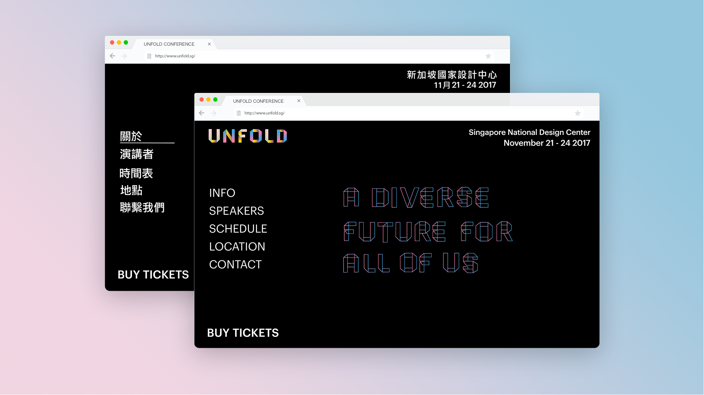

Project Concept: Unfold is a hypothetical conference held in Singapore. The conference explores the topics of diversity in the design space.
Roles: Branding, UI/UX, Typography, Print Design & Environemntal Design
Collaborators: Sheila Cheng & Nikhil Misra
Unfold Conference


UNFOLD is a hypothetical conference exploring ethical responsibility and technology.
Delving into the topic of diversity in the design
landscape and creating a conversation around the designer's ethical role.
I worked in collaboration with other graduate level students to develop
a cohesive branding system for the conference.
Developing the Brand
We began by developing an identity system for our conference.
We brainstormed names and decided on the term unfold. We thought it
was an unexpected term that could represent the idea of open-mindedness
and diversity. We almost immediately decided on Singapore
as our point of location, making the National Design Centre as our venue.
We carefully selected Singapore because of its approach
for a multiracial, multireligious society.
Upon settling on a name and location for our connference, we also began crafting our own folded letterforms to complement with theme of UNFOLD.
Upon settling on a name and location for our connference, we also began crafting our own folded letterforms to complement with theme of UNFOLD.
Online Presence

To promote the conference we designed a website to house in information about the conference including
speakers, schedule, venue and other logistics. Since our focus revolved around diversity, we
incorporate multiple languages in our conference. We designed a version in english and one in mandarin.
In-conference App
Along with the website, we designed an app that could be used during
the conference. The app included the schedule, floor maps
of the venue, speaker’s information, and a location for users
to access their code and redeem their meals throughout the day.
Promoting the Conference
To further promote the conference UNFOLD, we created a social media presence on twitter,
facebook, instagram along with an email campaign.
Our Venue
We imagined our venue to be reflective of our identity. Our goal was to
make the attendee feel welcomed, joyful, and hopeful about a diverse future
in the design world. We incorporated our customized letters and numbers
into our venue space to make it festive. Afterall, our conference is a
celebration of diversity.
The Archive
After the conference concluded, the website changed appearance in order to recap the
highlights of the conference.